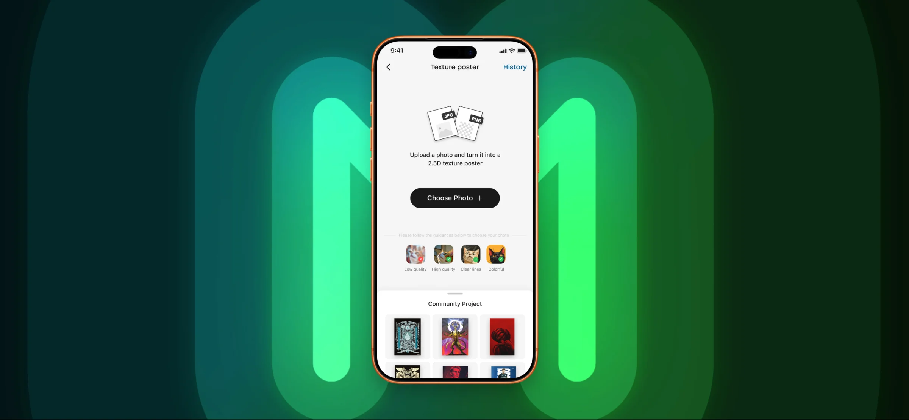
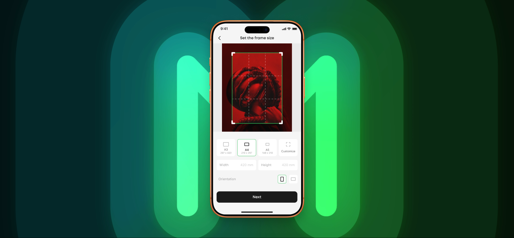
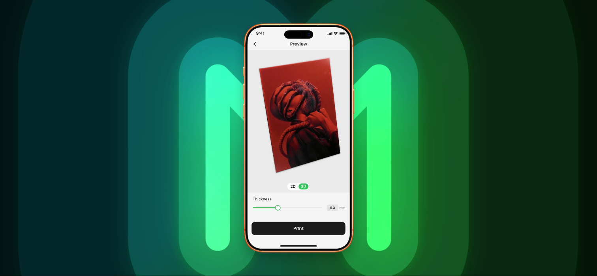
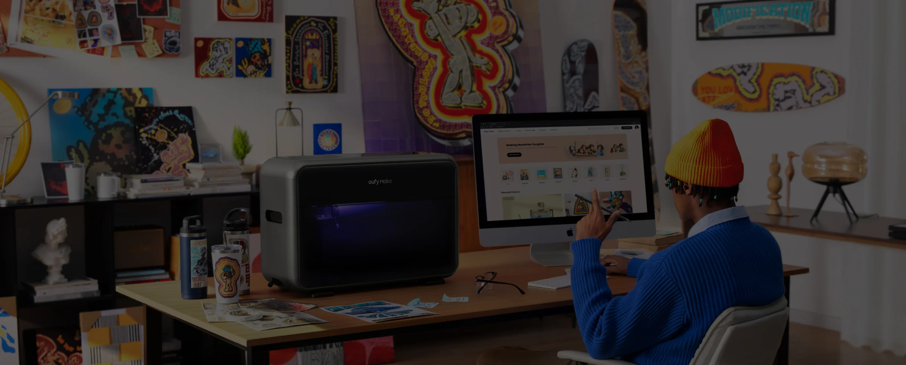
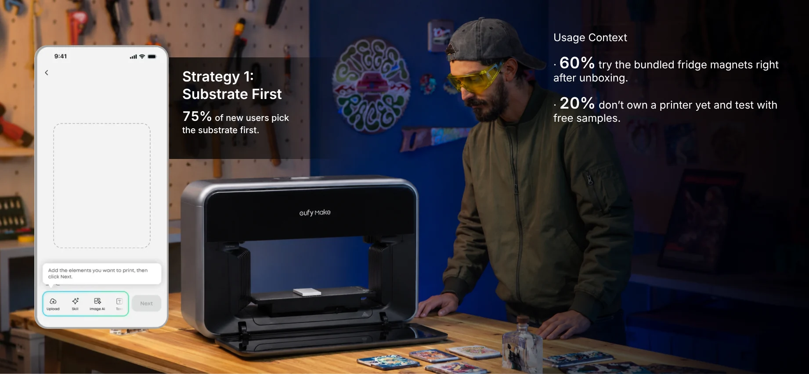
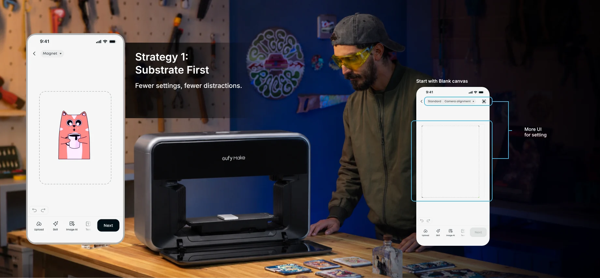
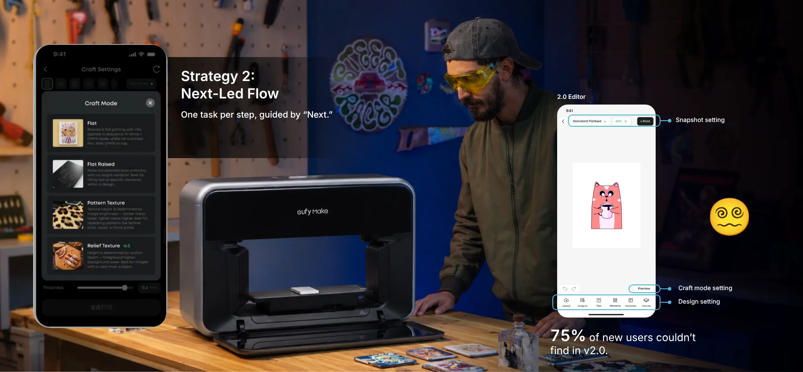
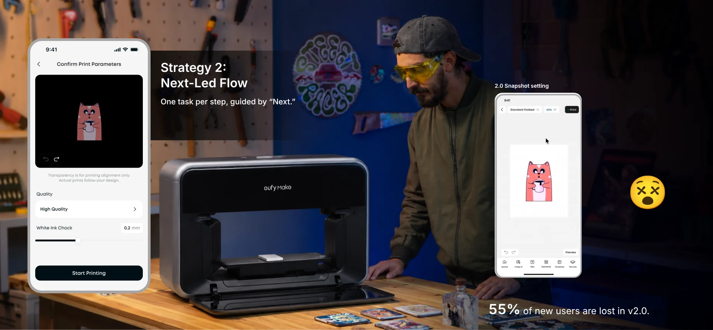
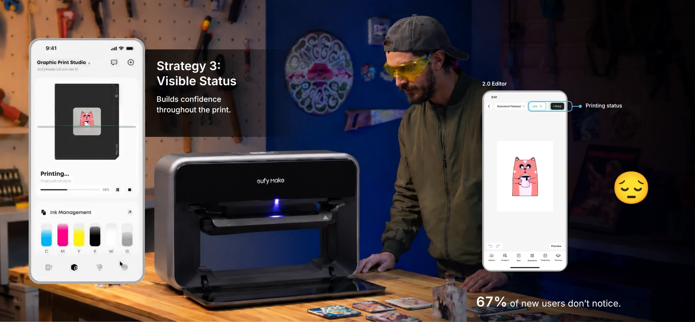
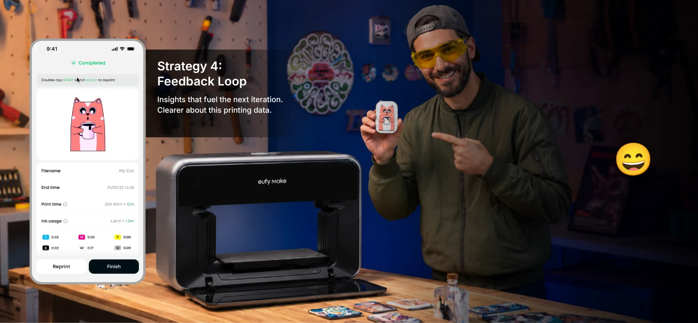

Quick Overview
Device Pairing
I worked on two iterations of the app, 2.0 and 3.0.
2.0 focused on a fast, reliable printing experience, working closely with the product and engineering teams.
I delivered the device-pairing onboarding tutorial.
Print Process
Across 2.0 and 3.0, I focused on optimizing the printing flow. Here are key screens from the 3.0 linear print-flow redesign. Click to view the design details.
view more →Edit first, settle later.
Every setting lived in its own sheet, so people kept bouncing back to the editor before they could print.
One linear, guided path.
The redesign starts from the substrate and moves forward one decision at a time, from the box to the first print.
Creative Lab
I also independently designed Creative Lab for version 2.0, from user research and competitive analysis to low- and high-fidelity delivery.



Image AI
I also built the Image AI feature: an AI agent that helps users generate creative images.
Problem

in the 2.0 app’s printing flow.
Methodology
Garrett’s UX layers, from abstract to concrete. Each layer answers one question.
01 Strategy
Define who our users are and their key usage scenarios.
User Type
User Development Map
Goal
02 Experience
Can users complete a print task smoothly?
Stage1: Onboarding






03 Structure
Do features appear when needed?
04 Surface
Can users understand the visual design?